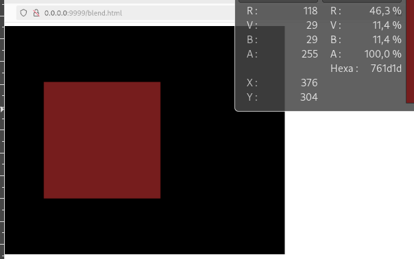
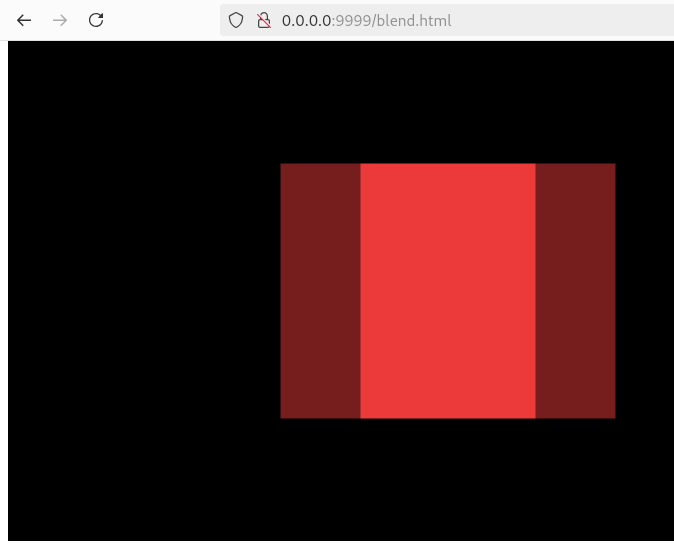
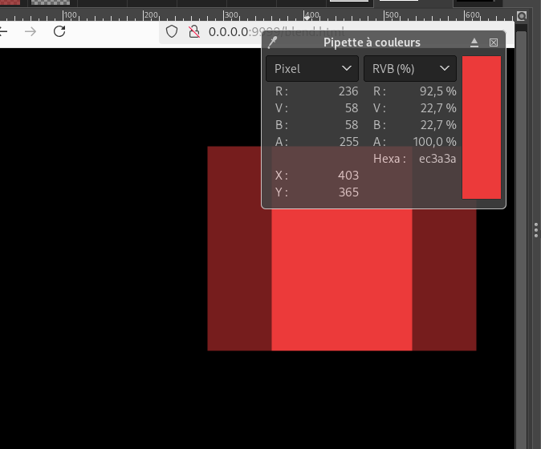

la portion la plus à gauche, c'est la partie d'une image créee avec Gimp. Elle est composée d'une seule couleur de valeur : 165 40 40 183
Elle est affichée sur l'élément canvas, de couleur noire.
La couleur résultante théorique est donnée par les formules :
(1) co = Cs * as + Cb * ab * (1-as)
(2) ao = as + (1-as) * ab
Cs et as sont les valeurs (rgba) de la couleur source, c'est la couleur de l'élément que l'on va afficher.
Cet élément , cette image, a été fait avec Gimp.

Cb et ab sont les valeurs (rgba) de la couleur déjà affichée.
Ici c'est le fond noir :
Cb = (0,0,0)
ab = 1
calculons la couleur résultante :
co = Cs * as + Cb * ab * (1-as)
co = (165/255, 40/255, 40/255) * (183/255) + (0/255,0/255,0/255) * 1 * (1-183/255)
On divise chaque valeur par 255 pour avoir les valeurs 'réelles'
co = (0.46 , 0.11 , 0.11)
On fait une capture écran de la page obtenue, on colle le résultat sous Gimp et on lit sa couleur :
Valeur théorique et valeur lue, elles sont égales.
on affiche maintenant deux points.
et on lit après capture écran la couleur d'un point sur l'autre.
Calcul théorique
le second point est affichée sur la couleur...du premier point déjà affiché
cette couleur a été à la fois mesurée et calculée dans la 1re partie, elle vaut :
rgb = (0.46, 0.11, 0.11 )
c'est la couleur Cb. Avec ab valant 1. cette couleur est déjà composée.
Cs = ( 0.65 , 0.16 , 0.16 )
as = 0.72
co = Cs * as + Cb * ab * (1-as)
co = (0.65 , 0.16 , 0.16 ) * 0.72 + ( 0.46 , 0.11 , 0.11) * 1 * ( 1- 0.72 )
co = ( 0.60 , 0.145, 0.145)
La valeur calculée ne correspond pas à la valeur affichée. oups.
J'essaye alors d'affichée ces deux images identiques avec deux éléments img. le 2e légèrement décalée de sorte qu'une partie soit affichée sur le 1er. On fait une capture d'écran, on lit la valeur de la couleur, elle correspond au résultat calculé.